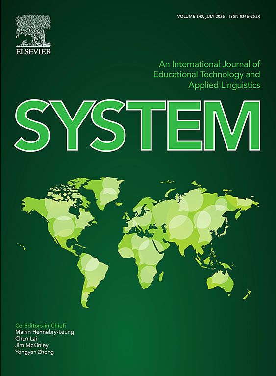
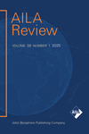

Editorial Board Member, System
Editorial board service for an international journal in educational technology and applied linguistics.
Journal link
Editorial board service for an international journal in educational technology and applied linguistics.
Journal link
Qualitative Research on Language Learning Strategies and Sources of Regulation, with Nathan Thomas and Jason Schneider.
Journal linkSihan Zhou has acted as a reviewer for RGC grant submissions, and for a number of SSCI-indexed international journals such as System, Applied Linguistics, TESOL Quarterly, The Modern Language Journal, Studies in Second Language Learning and Teaching, Journal of English for Academic Purposes, International Journal of Bilingual Education and Bilingualism, Journal of Multicultural and Multilingual Development, RELC Journal, Language, Culture and Curriculum, Language & Education, Current Issues in Language Planning, International Review of Applied Linguistics in Language Teaching, The Asia-Pacific Education Researcher, European Journal of Education, Higher Education, etc.
In the past five years, Sihan Zhou has engaged in Knowledge Transfer activities to train school language teachers, develop language-related e-learning products, and coordinate symposiums and events to promote effective practices in language education.